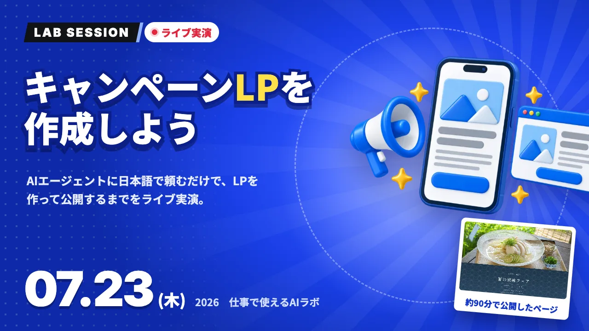
飲食店の申込ページをAIエージェントと約90分で作成しました
- 作ったもの：和食店のキャンペーン申込ページ
- ページに使う写真もAIで生成しました
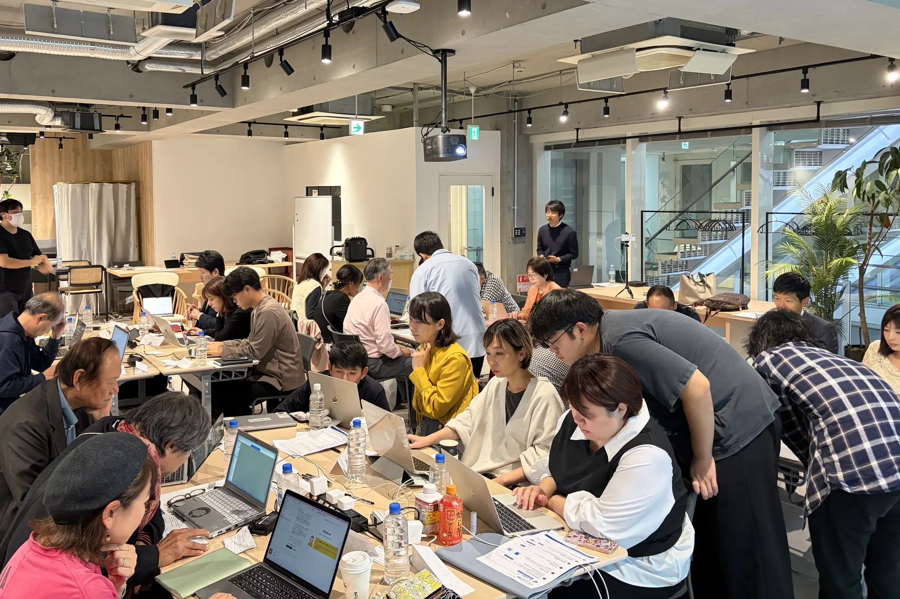
小規模事業者・中小企業のための継続型AI活用コミュニティ
AIのこんな疑問に答えます
ChatGPTとClaude、Geminiの違いは？
できることは大体同じです。まずは無料版で使ってみて、用途ごとに使い分けるのがおすすめです。
回答はQ&A配信で、会員の皆様に届きます
月1回のラボセッションで実際の業務を題材にした実演を見て、分からないことはLINEで質問できる、小規模事業者・中小企業のための継続型AI活用コミュニティです。
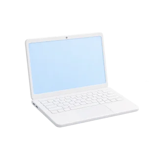
月1回
ラボセッションオンラインで1.5〜2時間。録画と資料が残ります。随時
会員Q&Aほかの会社の質問と回答がLINEに届きます。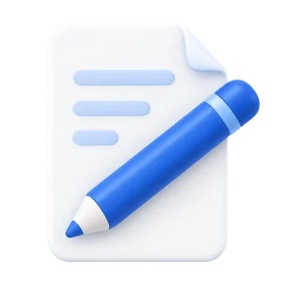
毎週
今週のプロンプトコピーしてそのまま使える実務プロンプトです。スクールとコミュニティ
仕事で使えるAIラボでは、動画やラボセッションで学びつつ、会員同士の交流や実務の現場での活用事例からも実践的な知識を得られます。
スクールのように学べる
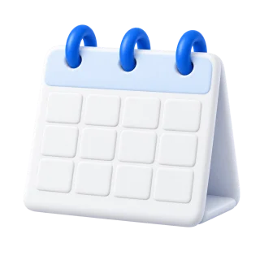
月1回のラボセッションで、AIで作る流れの実演を見られます。コミュニティだから分かる
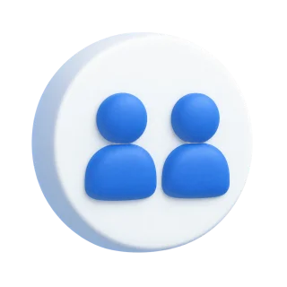
会員同士で交流できます。AIを使ううえでいちばん大事なのは、実務の現場の活用事例だと考えています。
数は2026年11月時点で、会員ポータルに公開しているものです。
これまでのラボセッション

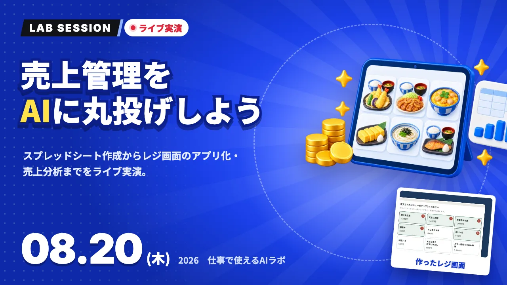
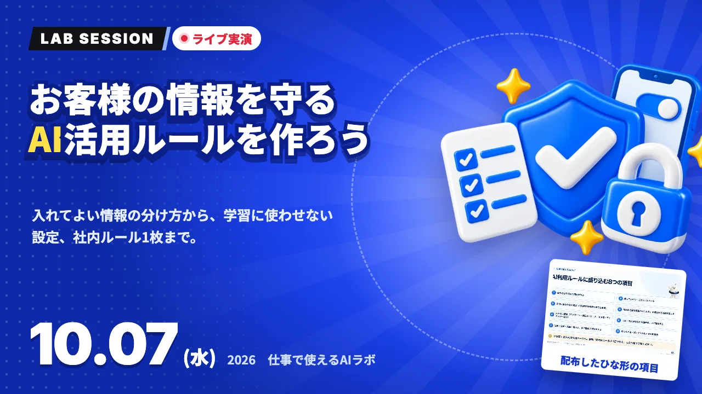
当日に出られない月も、録画と配布資料を会員ポータルで見られます。
会員から届いた質問
LINEで
いつでも質問
回答はQ&A配信で、会員の皆様に届きます
すべて会員から実際に届いた質問です。回答は会員ポータルにたまり、あとから探して読めます。
会員ポータル
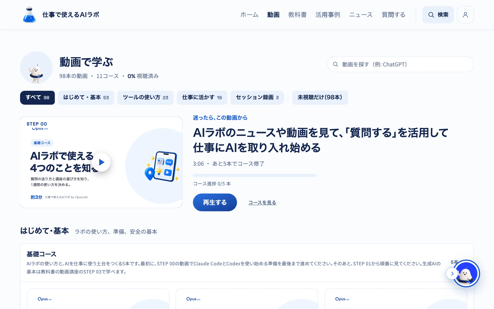
98本11コース
1本2〜5分の動画を、基礎コースからChatGPT・Claude Code・Codexの講座まで、コースの順に見られます。見終わった動画にはチェックが付きます。
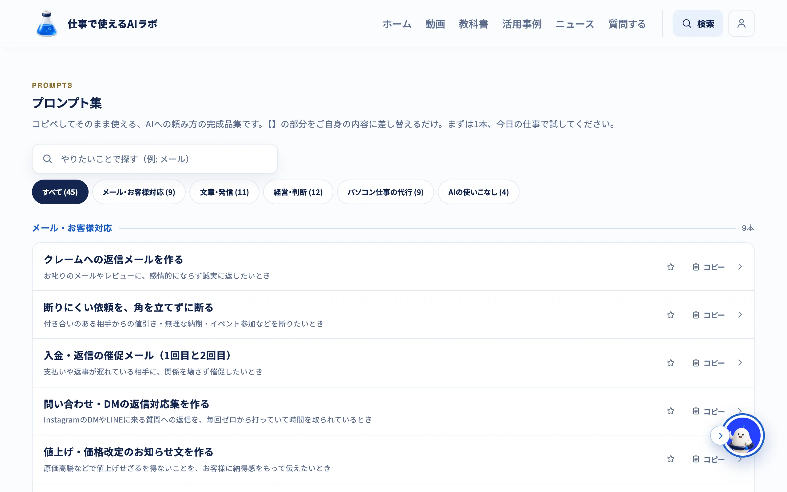
45本
メール・議事録・資料づくりに、コピーしてそのまま使える指示文をそろえています。毎週1本を「今週のプロンプト」として紹介します。
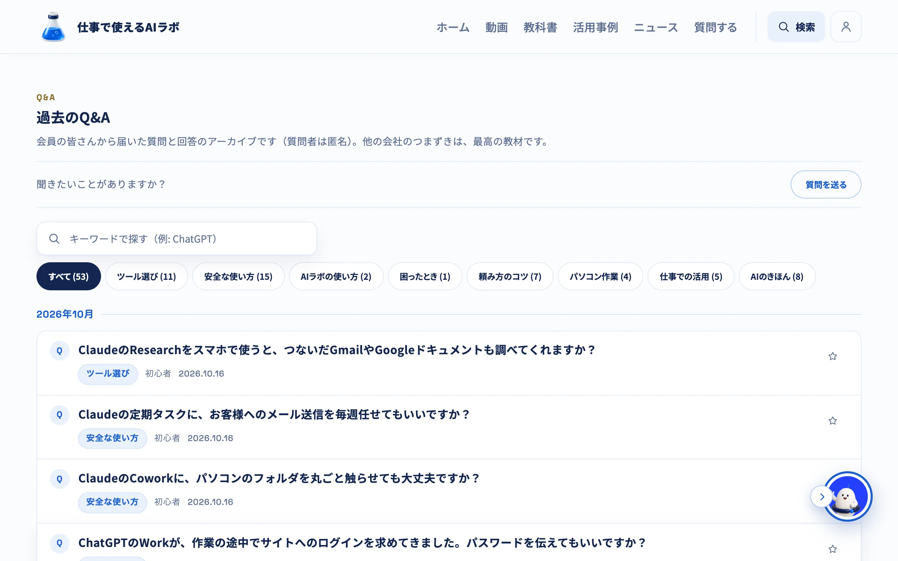
53件
自分で質問しなくても、ほかの会員の質問と回答をまとめて読めます。キーワードやカテゴリで探せます。
掲載している画面と公開数は、2026年11月時点の会員ポータルのものです。
会員の声
作品展のDMを作りましたが、その後印刷をするところで行き詰まっていたのですが、Codexにお願いしてみたら、全部解決してくれて、印刷の入稿が完了しました。ありがたかったです。
改めてコードを細かく書けなくても、AIと対話しながら業務で使える仕組みを作れることが分かり、自社業務への活用イメージを具体的に持てました！
リアルタイムで出来上がっていくのがわかりやすかった
AIを使いこなすと
外注費や人件費の目安と、ラボセッションで扱った実例をまとめました。金額は一般的な目安であり、仕事の内容によって変わります。
これまで
Webサイト制作を外注初期費用30万円前後
＋管理費用 月1万円前後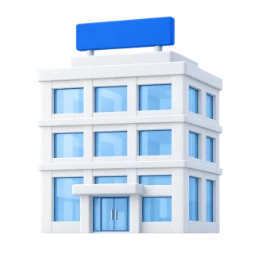
AIを使うと
約90分
7月のラボセッションでは、飲食店の申込ページをAIエージェントと約90分で作る流れを実演しました。
これまで
事務スタッフを1人採用人件費の目安月30万円前後
AIを使うと
事務の仕事をAIに任せる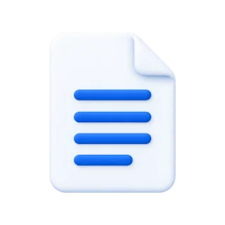
議事録の清書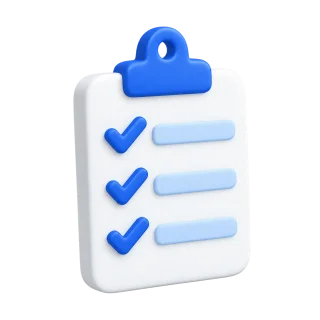
請求書の整理メール作成や請求書整理など、日々の事務仕事を少しずつAIに任せていけます。
入会したあとの1か月
毎月届くもの
読むだけで流れについていけます。届いたものをひとつ試すことを、毎月くり返します。
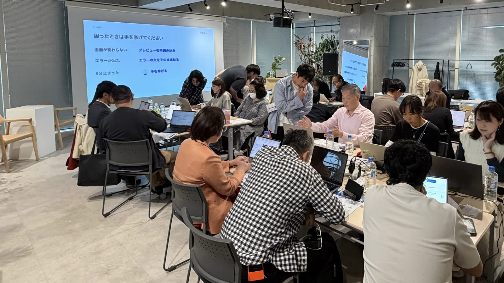
週2回
AIニュースLINEに届きます。仕事での使いどころの解説付きです。随時
会員Q&Aほかの会社の質問と回答がLINEに届きます。毎週
今週のプロンプトコピーしてそのまま使える実務プロンプトです。月1回
ラボセッションオンラインで1.5〜2時間。録画と資料が残ります。入会の流れ
パソコンが得意でなくても大丈夫です。入会特典のスタート面談で、いまの状況を伺いながら一緒に決めます。
Webの申込フォームから、規約に同意してカード決済まで完了します。
会員用LINEの友だち追加と、会員ポータルへの招待をお送りします。
入会特典の個別面談です。現在の状況に合わせた始め方をご提案します。
ラボセッションとLINE・会員ポータルで続けていきます。
料金
スタンダード（月額）
9,800円 / 人（税別）税込10,780円 / 人
最低利用期間は契約成立日から3回分の決済（3か月）です。お支払いはクレジットカードによる自動決済です。退会は次回課金日の前日までにご連絡ください。特定商取引法に基づく表記
ラボセッション・録画・LINE質問・プロンプト配布・会員ポータル、すべて月額に含まれます。プランによる機能の出し分けはありません。入会金9,800円（税別）が参加者ごとに初回のみかかり、最低3回分のカード決済です。詳しい料金体系は資料にてご案内しています。
はい、同じ会社の複数人でご参加いただけます。同じ会社の2人目からは、月額5,500円（税別）です。
最低利用期間は契約成立日から3回分の決済（3か月）です。退会は次回課金日の前日までにご連絡ください。年間契約の縛りはありません。
大丈夫です。入会特典の30分の個別「スタート面談」で今の状況を伺い、現在の状況に合わせた始め方をご提案します。基礎コースの動画から自分のペースで始められます。
仕事で使えるAIラボには、会社別の個別診断・個別伴走は含まれません。必要な会社だけ、個別相談・ハンズオン研修・AI顧問などの個別支援（別料金）をご案内しています。
無料のAI活用セミナーをご案内しています。開催日程・受付状況はセミナー案内ページをご確認ください。「自分の会社で使えるか相談したい」というご連絡だけでも歓迎です。無理な営業は一切いたしません。
運営会社
株式会社Opus.net東京都台東区浅草橋
無料セミナーと資料
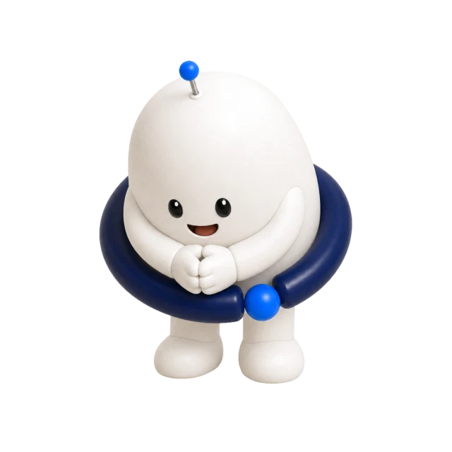
仕事への活かし方をオンラインで学べます
次回の日程は、決まり次第、仕事で使えるAIラボの公式LINEでお知らせします。
サービスの内容と料金を資料で確認できます
「自分の会社で使えるか相談したい」というご連絡だけでも歓迎です。お問い合わせ公式LINEで友だち追加